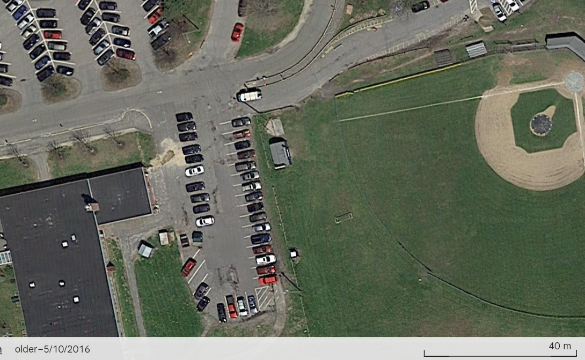
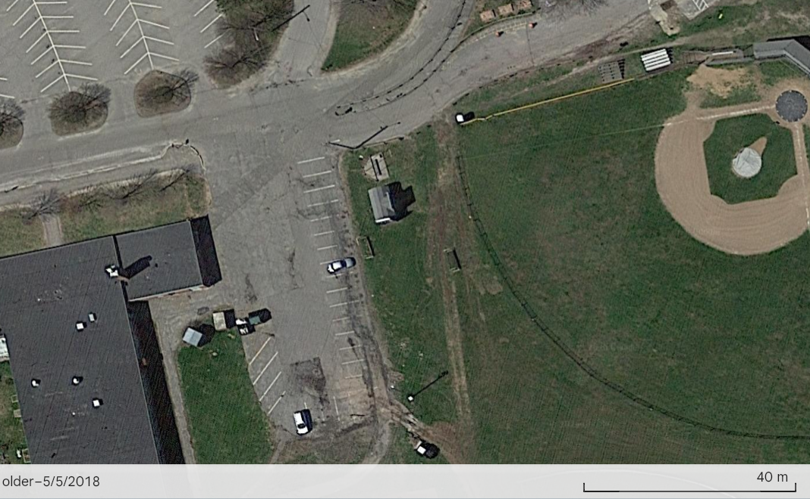

Portland · 2016
The material below is sourced from the Portland Press Herald archive, City of Portland budget and committee records, a Maine Municipal Association inspection report, satellite imagery, and records obtained directly from the Maine Department of Environmental Protection. All the information is publicly available and verifiable. No information is taken from the Maine CDC cancer cluster investigation records described on the Investigation page. Each citation links to the original scanned notice, article, image, or source document where available.
1/25/2016 - “Four schools in dire need of repairs, parents say”
“A $29.7 million bond to replace the Fred P. Hall Elementary School hasn't even received a public hearing yet and already there is a movement afoot in Portland to build support for another borrowing package to begin upgrading four other elementary schools.”
“The project has been deemed enough of a priority that it qualified for state funding to cover nearly all of the cost. However, the city would have to cover $1.4 million of the price because of additional features approved by a special committee and the School Board.”
“The idea of asking Portland taxpayers to kick in extra money for a bigger cafeteria, bigger gymnasium, additional play structures and outdoor learning spaces, and certifying it as a ‘green’ building, is prompting a broader discussion about other elementary schools that haven't been upgraded since they were built 40 to 60 years ago.”
“'We feel like we have to push hard this time,' said Judy Watson, a member of the Reiche Parent Teacher Organization. 'Everyone is in agreement, but nothing ever seems to get done.'”
“This year, spending on school facilities is only $950,000 of the $15.3 million Capital Improvement Plan budget, although that total is expected to increase to $3 million next year.”
“City Council Finance Chairman Nicholas Mavodones acknowledged that the schools are in need of upgrades, but said discussion about a November referendum is 'premature'. 'We have the whole city to manage,' Mavodones said. 'We need to make sure people understand the financial implications. It's going to be a tax increase, but how are you going to offset that by a reduction in spending?'”
“Joanna Frankel told councilors...She's not only worried about a leaky roof in the library and the deteriorating outdoor ramps used by all students, including those in wheelchairs, but also security at the school, which was built in the 1970s and has no walls separating the classrooms.”
“All of the schools appear to lack proper amount of security, storage and work spaces for students and teachers, and are in need of upgrades to electrical and mechanical systems, as well as weatherization and accessibility, according to the 2012 study of the schools.”
“'A lot of us feel very strongly that we can't let another generation of kids go through these schools in an inadequate learning environment,' (Mayor Ethan) Strimling said. 'Literally, we've had almost two generations of kids go through Hall School from the point we needed it replaced. That is simply too long.'”
Portland Press Herald · 1/25/2016 · cont.
The article features a large, close up picture, the underside of a cracked concrete ramp, with adults and children walking beneath it.
2/2/2016 - “Ramp at Reiche School closed over safety concerns”
“Parents had been monitoring the condition of the Clark Street ramp,...The condition had worsened in recent days and the ramp was closed after they alerted the school district's maintenance staff.”
“'After looking at the hole, it was determined that the cement had crumbled so much that not only was rebar visible through it, but the asphalt surfacing that had been put down several years ago was also starting to fall through,' the PTO said.”
Portland Press Herald · 2/2/2016
2/10/2016 - “Proposed borrowing plan will not add to city's tax rate”
“The city's capital improvement budget returns attention to some basic needs, according to City Manager Jon Jennings. 'We are really ramping up areas we have neglected, such as our fleet,' Jennings said Feb 4. as he introduced the $15.1 million budget to the City Council Finance Committee.”
“The new budget also increases spending on public facilities from $2.7 million to $4.1 million, while reducing spending on park-related projects from $1.1 million to $518,000.”
“Also included in the plan is $1.9 million for improvements to city schools including removal of the ramp at Howard C. Reiche Community School.”
“About half of the current $14.5 million capital improvements budget finance[sic] by bonds was allocated for a new emergency communications system, which caused more deferrals of basic maintenance and upgrades.”
“Although park spending is reduced, the plan calls for spending..., $200,000 for a second phase of drainage work on the athletic fields at Lyman Moore Middle School,”
Portland Press Herald · 2/10/2016
2/12/2016 - The Maine Municipal Association inspected Reiche School, listing several action items to be completed by 4/29/2016.
Maine Municipal Association Action Plan · 2/12/2016
3/1/2016 - The plan created by Oak Point Associates to renovate four elementary schools, “Buildings For Our Future” (BFOF), is updated. The cost for Lyseth's renovation is projected at $20,214,577.
“Lyseth: Currently Envisioned Scope Changes”
“Removed: Rainwater harvesting, Vegetated roof, Reduced cost of security system to match current district plans”
“Added: Reconstruction of the Moore parking lot (including stormwater management), Entrance improvements, Playground and outdoor learning improvements, Moveable Equipment (furniture and technology equipment)”
5/4/2016 - R.J. Enterprises (the company that completed the 2007 Lyseth asbestos abatement) posted a Help Wanted ad in the Press Herald.
“Looking for licensed asbestos workers and/or supervisors for a local abatement company in Brunswick. Please contact us at (phone)”
Portland Press Herald · 5/4/2016
5/10/2016 - A Google Satellite took an aerial photo dated 5/10/2016. The image shows a car-length hole with fresh dirt in the Lyman Moore parking lot. The hole is directly next to the steam room, and appears to be over the logical path of the steam heat lines to Lyseth. There are cars parked 1/2 a car-length from the hole, and no visible cones or tape blocking off the area.

5/25/2016 - “School board seeks $70 million to upgrade 4 dilapidated schools”
“At a Tuesday hearing, a string of parents got up to thank the board for supporting the full $70 million in recommended fixes. 'A lot of parents have been waiting a long time for this,' said Jess Marino, who has three children in the district. 'I am so happy that this is happening.'”
“Many noted that the money would be spent on practical fixes, like installing functional heating and windows that open, eliminating trailers for classrooms and easing overcrowding. At one school a social worker is in a windowless closet.”
“'We have a gym-a-cafe-torium at Lyseth,' Principal Lenore Williams told the board. 'We can't convene without being in violation of fire codes.'”
“Steven Scharf, a resident and regular City Hall observer, said he opposes the borrowing. 'I think $70 million is far too much to be spending on schools and I think you'll have difficulty getting this passed,' he said.”
Portland Press Herald · 5/25/2016
6/8/2016 - “Borrowing to renovate city schools supported - But some parents worry that a proposed $70 million bond would raise taxes too much - 5-6 percent annually for the first five years.”
“About a dozen parents spoke at the Portland School Board meeting Tuesday, most urging support for a proposed $70 million bond to renovate four of the city's elementary schools. A handful, however, worried that it would raise taxes too much and possibly drive people out of town.”
“The $70 million figure - selected over less-costly options - is the result of the most recent update of the 'Buildings for Our Future' report, By Oak Point Associates architecture and engineering firm... According to the report, the breakdown of costs and some building-specific projects are:”
“Lyseth: ($20.2 million, 500 students) Add second floor, improve driveway and parking lot, steam line upgrades, storm water repairs.”
“Reiche: ($17.9 million, 400 students) Reconfigure interior space, replace roof, rebuild library and stairs.”
“Longfellow: ($16.4 million, 340 students) Add elevator to make second floor ADA compliant, replace roof, remove asbestos, update electric, replace windows, repoint masonry.”
“Presumpscot: ($16.1 million, 300 students) Add second floor, improve parking lot, repair athletic field.”
Portland Press Herald · 6/8/2016
6/28/2016 - An unattributed document included in the Q & A Packet provided at an 11/17/16 Ad Hoc Committee, Attachment A1, is titled: “Elementary Repairs, Renovations, System Upgrades and Replacements, 6/28/2016”
“Presumpscot - 2009-2016 ($550,000)”
“Boiler replacement, Abated all asbestos, Ongoing flooring replacement”“Longfellow - 2009-2016 ($200,000)”
“Ongoing abatement removal, Ongoing flooring replacement”“Lyseth - 2009-2016 ($1,100,000)”
“Replaced roof, Replaced windows, Removed all asbestos, Upgraded many electrical panels, Repaired Lake Lyseth at playground, Ongoing flooring replacement, Replaced guard rail system around the campus, Replaced heat piping from Moore”“Reiche - 2009-2016 ($1,100,000)”
“Replaced 2 boilers, Replaced flooring in sunken area of the stage, Removed ramp on Clark Street side”
Q & A Packet, Attachment A1 · 11/17/2016 Ad Hoc Committee
No “Notice to Contractors” was found in the Press Herald between May 10th and June 28th for any work or asbestos removal at Lyseth or Lyman Moore.
$400,000 is listed in the 2017 CIP budget for “Lyman Moore paving drainage”. In the below image from May 5, 2018 the parking lot looks unchanged from 2016, note the large cracks that are in both images.

There is a visible line of new pavement from the corner of Lyman Moore to Lyseth, directly over where the hole appeared in May 2016. The pathway goes directly through the bus loop entrance and under the guard rail system that was replaced in 2016. It is approximately 285 feet long and tapers from ~5ft wide to ~3ft wide as it reaches Lyseth.
No asbestos removal at Lyseth occurred after 2015, where 150ft of floor tile was removed, according to Maine DEP records.
The current Portland Public Schools website lists all four elementary schools renovated during the BFOF project as currently containing asbestos. Talbot Elementary, all three middle schools, and all four high schools, also currently contain asbestos.